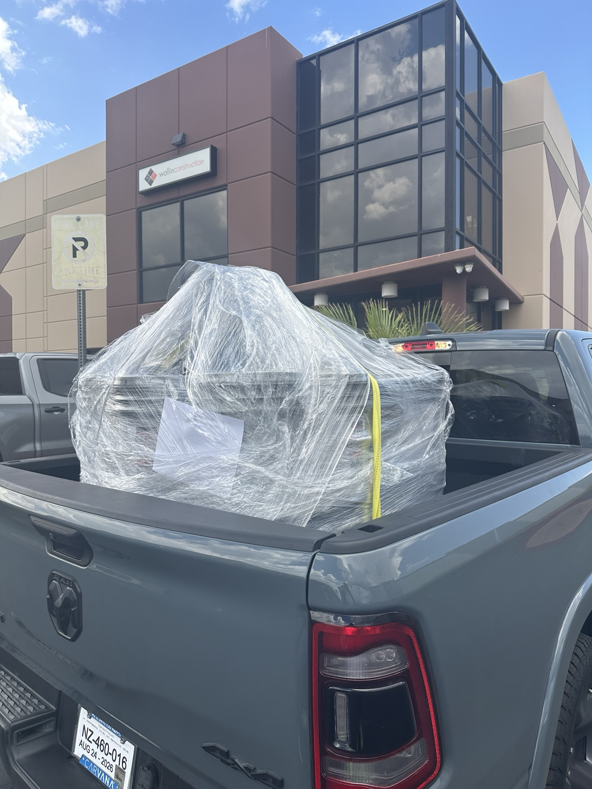

LAS VEGAS CONTRACTOR DELIVERY
Need tools, equipment, supplies or construction materials delivered to a jobsite? Crowne Hauling & Delivery provides local contractor pickup and delivery throughout the Las Vegas Valley.
Get an Contractor Delivery QuoteCONTRACTOR & JOBSITE DELIVERY
Crowne Hauling & Delivery helps contractors, tradespeople and local businesses transport tools, equipment, supplies and construction materials from local stores and suppliers to jobsites throughout the Las Vegas Valley.
WHAT WE DELIVER
Pickup and delivery for appropriate building materials, supplies and jobsite items from local stores and suppliers.
Local transportation for tools, equipment and other qualifying items needed at residential and commercial jobsites.
Need materials picked up from a local hardware, building supply or home improvement store? Send us the order details.
Direct local delivery from stores, suppliers and pickup locations to residential and commercial project sites.
Local transportation support for businesses, contractors, retailers and property managers needing large items moved.
Additional local pickup and delivery capacity when your regular team, vehicle or schedule is already committed.
HOW IT WORKS
Share what needs to be transported, approximate size and weight, pickup location, jobsite location, timing and access details.
We'll review the transportation requirements, distance, access and load details and provide pricing for the job.
Your materials, supplies or equipment are loaded, secured and transported to the requested delivery location.
REAL CHAD DELIVERIES

WHY USE CHAD?
Contractor and jobsite delivery throughout Las Vegas, Henderson and North Las Vegas.
We help move appropriate materials, tools, supplies and equipment from local stores and suppliers to project locations.
A practical local delivery option for contractors and businesses that need additional transportation capacity.
SERVICE AREA
Crowne Hauling & Delivery provides contractor, jobsite and commercial pickup and delivery throughout Las Vegas, Henderson and North Las Vegas.
NEED A DELIVERY TO THE JOBSITE?
Share what needs to be transported, approximate size and quantity, pickup location, jobsite location, preferred timing and access details. We'll review the transportation requirements and provide a quote.
Request a Contractor Delivery Quote